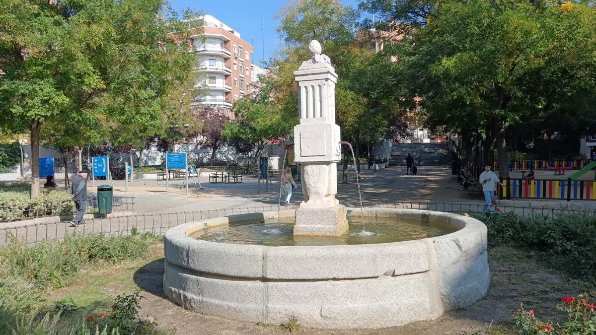
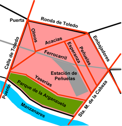
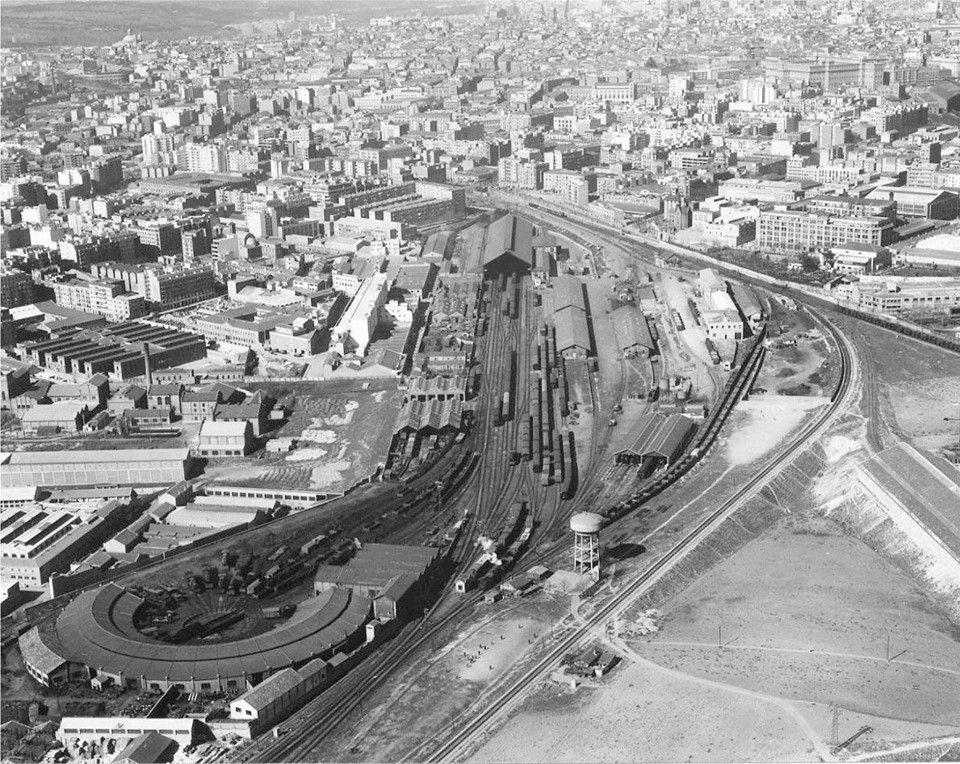
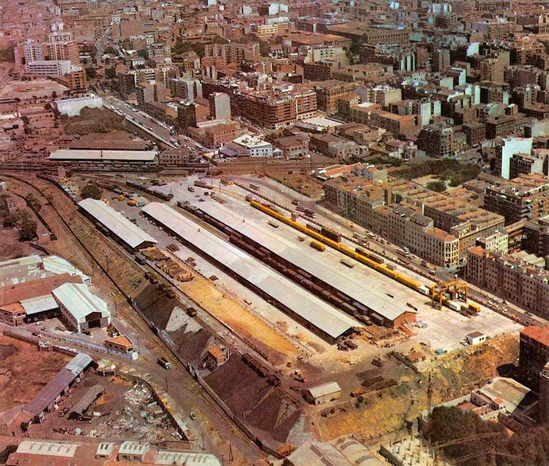
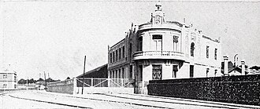
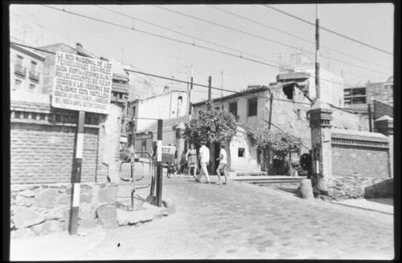
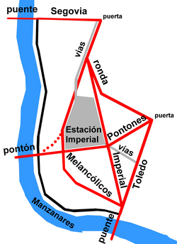
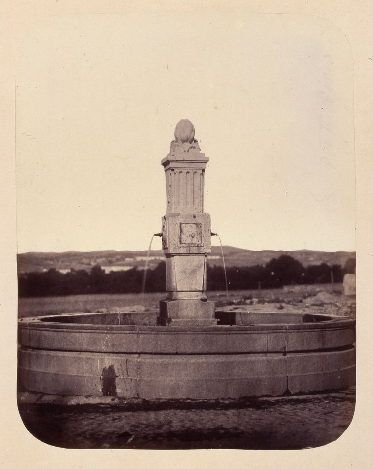
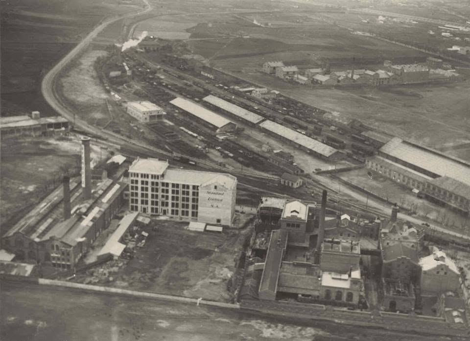

Arganzuela and Peñuelas: from my great-grandparents to my children
Arganzuela is my neighbourhood. The one where I live with my family today — the same one where my great-grandparents once arrived to build their lives from scratch. There is something hard to put into words when you walk these streets knowing that four generations of your family have walked the same pavements.
The story begins in 1914, the year my grandmother María Luisa was born. Her parents, my great-grandparents, had moved to the Peñuelas district — one of those areas of early twentieth-century Madrid that took in working-class families from all over Spain who had come to the capital looking for a better life.
Of all my grandmother's early jobs, the one that stays with me most is working as a washerwoman on the Manzanares river. I picture her young, on the riverbank, hands in the cold water, alongside other women from the neighbourhood. Hard work, dawn to dusk, the kind that was simply the norm for women of that era and that Madrid.
In time, my grandmother María Luisa married Nicolás, my grandfather. They lived in Peñuelas renting a flat, and Nicolás made ends meet as best he could. One of his activities was baking bread illegally at home — something that at the time was regulated and required a licence. He was reported several times for it. He probably wasn't the only one in the neighbourhood doing it, but he had little choice: the family needed to eat.
The war and the prison camp
The Civil War came, and my grandfather Nicolás fought on the Republican side. I don't know whether he enlisted or was drafted, but I do know what happened to him afterwards: he was captured by the Nationalist forces and sent to a concentration camp in Burgos. There, among other humiliations, they were made to walk barefoot. The conditions were brutal. My grandfather contracted illnesses — pneumonia — that settled into his body and from which he never fully recovered.
The gesture that changed everything
While Nicolás was at the front or in captivity, my grandmother stayed in Peñuelas with the children. At some point during the war, a man from the Nationalist side knocked at her door. He was being hunted by the Republicans and faced a real risk of execution. My grandmother, even though her husband was fighting on the opposite side, took him in.
That gesture — in the middle of a civil war, where distrust and fear seeped into everything — was enormous. And it had consequences. When the war ended and the Nationalists won, that man did not forget what my grandmother had done for him. He found Nicolás and brought him home, and as a token of gratitude he got my grandmother a job: concierge of the Livestock Syndicate, at 54 Calle de las Huertas, in the Literary Quarter.
That syndicate, that street, that number — they would be the next chapter in my family's story. You can read it in The Literary Quarter: Huertas 54.
Standard Electrica and the cable girls
Curiously, the story of my family and this neighbourhood does not end there. The building where I work today — Amazon MAD12 in Arganzuela — was once the headquarters of Standard Ibérica, the Spanish subsidiary of the ITT multinational, one of the great telecommunications factories of twentieth-century Madrid. And that is where my aunt Mari worked, in a role very much like the one portrayed in the series Las chicas del cable (The Cable Girls): women operating switchboards, laying lines, connecting voices across a country trying to rebuild itself.
My father tells me they would often walk from the Huertas concierge lodge to pick up my aunt after her shift, crossing the whole neighbourhood on foot to reach the factory. A walk I now do in the opposite direction every morning on the way to the office, treading the same cobblestones without knowing it then.
The orchard and the riverside tavern
My father also remembers that on some Saturdays they would go down to an orchard in the area between what is now the Metals neighbourhood and the Manzanares river. It was a place where you could pick your own tomatoes and lettuces straight from the earth, and then eat them on the spot at a small tavern next door. An image that is hard to picture today looking at the same stretch of land, but one I find beautiful: the river, the orchard, the family, Saturday afternoons.
The Metals neighbourhood: a no-go zone
I live today at 37 Calle Bronce, in that same Metals neighbourhood. But the story my father tells about that place back then has nothing to do with the quiet, family-friendly area I know now. According to him, the neighbourhood was extremely dangerous — so much so that there were police cars permanently stationed at the entrance and exit to monitor who came and went. People from the surrounding area simply went around it, rather than through it, to avoid trouble. In practice, it was a place no outsider dared enter.
It is hard to believe when I take my children for a walk around here, but that is how it was. The Madrid my grandparents, my father and my aunts and uncles lived in was a different Madrid, and these neighbourhoods that are now mine had a completely different face.
The same ground, a hundred years apart, and four generations of my family woven into it without any of us having planned it that way.
Arganzuela and its Working-Class Districts
The district of Arganzuela is not simply a transit zone or a collection of modern housing blocks. It is a territory shaped by the collision between industrialisation, the bourgeois ambitions of the Castro Plan and the daily resistance of the working classes. What today looks like a pleasant residential area was once a slum where survival was the main driver of life, and the birthplace of an unbreakable social conscience.
{kind=link}

The fountain at Plaza de las Peñuelas today, on the same spot where the residents of the working-class neighbourhood used to gather.
1. The origin of a name: from the rocky outcrop to the Melon Fair
The name Las Peñuelas comes from the peñuela de Santa Isabel, a small rocky outcrop in the uneven terrain of this southern sector of Madrid. This place, now associated with the Acacias district and the Paseo de la Esperanza, became home to thousands of workers after the old city walls were demolished and the Castro Plan began in 1870.
One of the most striking aspects of its social life was the Melon Fair (Fiestas de la Melonera), held every September on the banks of the Manzanares, near the chapel of the Virgen del Puerto. Its origins are fascinating: pilgrims would gather to taste the melons and watermelons from Villaconejos that street vendors offered in the area. This celebration historically marked the end of summer and became a symbol of working-class identity, later suppressed by the regime in favour of more "traditional" and controlled festivities.
{kind=link}

Historical map of the Peñuelas district and its boundaries, with the railway station and the Manzanares to the south.
2. The iron giants: Peñuelas and Imperial
The face of Arganzuela was shaped by an interconnected rail network that linked the industrial outskirts to the centre of Madrid. The whole system revolved around the Outer Circle Line, connecting the Atocha and Norte stations (today's Príncipe Pío). This line was the artery that fed the industrialisation of the south.
| Station | Opened | Closed | Notes |
|---|---|---|---|
| Delicias | 1880 | — | Monumental terminal. Connected Madrid to Lisbon via Cáceres. Today houses the Railway Museum. |
| Peñuelas | 1908 | 1987 | Opened as the Alhóndiga station, vital for transporting oils, flour and asphalt. |
| Imperial | 1881 | 1987 | Popularly known as the "Flea Station" because of the livestock loaded and unloaded there. |
| Príncipe Pío | 1861 | — | Main hub of the Northern Railway Company. Connected to Irún and distributed coal and goods southward. |
{kind=link}

Historical aerial view of Delicias station. Madrid in the background. "El águila" brevery and Standard Electric to the right. The circular engine shed in the foreground is characteristic of the station.
{kind=link}

The Peñuelas freight station in the 1960s–70s. Where today there are parks and the Green Railway Corridor, there were once tracks, warehouses and constant movement.
{kind=link}

Exterior view of the Alhóndiga station (later Peñuelas station), published in Blanco y Negro on 1 August 1908, the year it opened.
These facilities were not just warehouses: they were sites of social conflict, barricades during the Civil War and nerve centres where neighbourhood residents earned their daily bread.
3. The map of the outskirts: Cambroneras, Injurias and Peñuelas
The southern zone, along the banks of the Manzanares, was home to districts that are now part of our historical memory:
| District | Historical location | Characteristics |
|---|---|---|
| Las Cambroneras | Near the Puente de Toledo | Known as "Madrid's Albaicín" for its large Romani population. A symbol of poverty facing the bourgeoisie; first home to many rural migrants. |
| Las Injurias | Near the Glorieta de Pirámides | Named after an old roadside shrine. Famous for the "Casas del Cabrero", evicted in 1906, where around seven hundred people lived communally. |
| Las Peñuelas | Paseo de la Esperanza | The rocky outcrop that gave the neighbourhood its name. Working-class heartland where hard labour mixed with unique traditions like La Melonera. |
{kind=link}

A street in the Peñuelas outskirts. The RENFE sign on the left shows just how present the railway was in everyday neighbourhood life.
{kind=link}

Historical map of the Imperial station area, with the Manzanares, the Paseo de los Melancólicos and the bridges that connected the neighbourhood.
4. The chronicle of poverty and revolutionary commitment
Writers such as Pío Baroja depicted this area with raw honesty in works like La Busca. The picture was bleak: substandard housing, shared courtyards where entire families were crammed together, and the constant contempt of the contemporary press for the "lower districts". Yet from that same poverty grew a rebellious consciousness that would shape the twentieth century.
Many residents had come from rural Andalusia and La Mancha, fleeing extreme poverty and the local political boss system, creating a community bound together by shared origins and the need to survive. This was the soil that produced figures such as Lucía Sánchez Saornil, born on Calle Labrador in 1895, a key figure in anarcha-feminism and co-founder of Mujeres Libres (Free Women), an organisation that would reach 20,000 members.
In the face of institutional abandonment, the neighbourhood responded with self-organisation. Teachers such as Jesús García Ricote fought to educate the children of the working class, turning education into a tool for liberation. That spirit lives on today in the Fundación Anselmo Lorenzo and the Ateneo La Maliciosa.

Aerial view of the Peñuelas area today. The Municipal Sports Centre now occupies part of what were once railway tracks and yards. The Plaza de las Peñuelas, in the centre, still has its historic fountain.
5. Water as a symbol and today's legacy
In 1864, photographer Alfonso Begué captured the neighbourhood fountain at the Plaza del Barrio de las Peñuelas. This image, preserved in the Memoria de Madrid archive, is a symbol of need and community. That fountain was the gathering point where information was shared and neighbourhood networks were built.
{kind=link}

The fountain at Plaza de las Peñuelas photographed by Alfonso Begué in 1864. In the background, the open, sparsely populated landscape of southern Madrid. Memoria de Madrid archive.
Today, the old railway lines have disappeared beneath the Green Railway Corridor project, giving way to parks and sports centres like the Marqués de Samaranch. The fountain still stands in the same square, now surrounded by trees and children. The same stone, one hundred and sixty years later.
6. Industry and the Cable Girls: Standard Electrica
Arganzuela was also a major industrial engine. The presence of Standard Electrica — the Spanish subsidiary of the ITT multinational — was fundamental to the local economy. This factory did not only produce telephone equipment; it was a space where hundreds of working women, known popularly as the "cable girls", played a crucial role in modernising communications across Spain.
{kind=link}

Historical aerial view of the Standard Electrica factory in Arganzuela. The railway lines of the outer circle are visible in the background. The central building with the "Standard Eléctrica S.A." sign is clearly visible. The author of this blog works today in the Amazon MAD12 offices on the same site.
This group of women workers was a pioneer in bringing women into industrial employment in Madrid, facing the harsh working conditions of the era and taking an active part in the union campaigns that fought for better wages and greater dignity.
My aunt Mari worked at Standard Ibérica — as the company was known in its Spanish phase — in a role very similar to the one depicted in the series Las chicas del cable (The Cable Girls). My father tells me they would often walk from the Huertas concierge lodge to pick her up after her shift. A walk I now make in the opposite direction every morning arriving at the office, not knowing then that I was treading the same cobblestones.
To walk today along the Paseo de los Melancólicos or through the Plaza de las Peñuelas is to walk in the footsteps of thousands of people who built Madrid with their labour. Stripping the romance from these "lower districts" is necessary: they were not places of crime but spaces of survival where a social commitment was born that defined the history of twentieth-century Madrid.